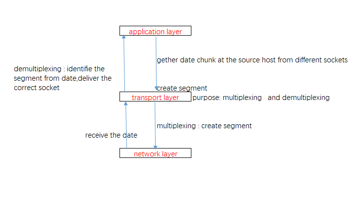

<!DOCTYPE html>
<html lang="zh">
<head><meta name="generator" content="Hexo 3.8.0">
    <meta charset="utf-8">
    
    <title>复路分解与多复路 | QK</title>
    
    
        <meta name="keywords" content="network">
    
    <meta name="viewport" content="width=device-width, initial-scale=1, maximum-scale=1">
    <meta name="description" content="复路分离与多复路发生在传输层的一种行为。  demultiplexing: At the receiving end, the transport layer examines these fields to identify the receiving socket and then directs the segment to that socket. This job of deliveri">
<meta name="keywords" content="network">
<meta property="og:type" content="article">
<meta property="og:title" content="复路分解与多复路">
<meta property="og:url" content="http://yoursite.com/2018/11/13/TCP-IP-demultipexing-multiplexing/index.html">
<meta property="og:site_name" content="QK">
<meta property="og:description" content="复路分离与多复路发生在传输层的一种行为。  demultiplexing: At the receiving end, the transport layer examines these fields to identify the receiving socket and then directs the segment to that socket. This job of deliveri">
<meta property="og:locale" content="zh-CN">
<meta property="og:image" content="http://yoursite.com/2018/11/13/TCP-IP-demultipexing-multiplexing/figure1.1.png">
<meta property="og:updated_time" content="2018-12-09T09:08:16.856Z">
<meta name="twitter:card" content="summary">
<meta name="twitter:title" content="复路分解与多复路">
<meta name="twitter:description" content="复路分离与多复路发生在传输层的一种行为。  demultiplexing: At the receiving end, the transport layer examines these fields to identify the receiving socket and then directs the segment to that socket. This job of deliveri">
<meta name="twitter:image" content="http://yoursite.com/2018/11/13/TCP-IP-demultipexing-multiplexing/figure1.1.png">
    

    

    
        <link rel="icon" href="/favicon.ico">
    

    <link rel="stylesheet" href="/libs/font-awesome/css/font-awesome.min.css">
    <link rel="stylesheet" href="/libs/open-sans/styles.css">
    <link rel="stylesheet" href="/libs/source-code-pro/styles.css">

    <link rel="stylesheet" href="/css/style.css">
    <script src="/libs/jquery/2.1.3/jquery.min.js"></script>
    <script src="/libs/jquery/plugins/cookie/1.4.1/jquery.cookie.js"></script>
    
    
        <link rel="stylesheet" href="/libs/lightgallery/css/lightgallery.min.css">
    
    
        <link rel="stylesheet" href="/libs/justified-gallery/justifiedGallery.min.css">
    
    
    
    


    
</head>
</html>
<body>
    <div id="container">
        <header id="header">
    <div id="header-main" class="header-inner">
        <div class="outer">
            <a href="/" id="logo">
                <i class="logo"></i>
                <span class="site-title">QK</span>
            </a>
            <nav id="main-nav">
                
                    <a class="main-nav-link" href="/">首页</a>
                
                    <a class="main-nav-link" href="/about">关于</a>
                
            </nav>
            
            <div id="search-form-wrap">

    <form class="search-form">
        <input type="text" class="ins-search-input search-form-input" placeholder="搜索">
        <button type="submit" class="search-form-submit"></button>
    </form>
    <div class="ins-search">
    <div class="ins-search-mask"></div>
    <div class="ins-search-container">
        <div class="ins-input-wrapper">
            <input type="text" class="ins-search-input" placeholder="想要查找什么...">
            <span class="ins-close ins-selectable"><i class="fa fa-times-circle"></i></span>
        </div>
        <div class="ins-section-wrapper">
            <div class="ins-section-container"></div>
        </div>
    </div>
</div>
<script>
(function (window) {
    var INSIGHT_CONFIG = {
        TRANSLATION: {
            POSTS: '文章',
            PAGES: '页面',
            CATEGORIES: '分类',
            TAGS: '标签',
            UNTITLED: '(未命名)',
        },
        ROOT_URL: '/',
        CONTENT_URL: '/content.json',
    };
    window.INSIGHT_CONFIG = INSIGHT_CONFIG;
})(window);
</script>
<script src="/js/insight.js"></script>

</div>
        </div>
    </div>
    <div id="main-nav-mobile" class="header-sub header-inner">
        <table class="menu outer">
            <tr>
                
                    <td><a class="main-nav-link" href="/">首页</a></td>
                
                    <td><a class="main-nav-link" href="/about">关于</a></td>
                
                <td>
                    
    <div class="search-form">
        <input type="text" class="ins-search-input search-form-input" placeholder="搜索">
    </div>

                </td>
            </tr>
        </table>
    </div>
</header>

        <div class="outer">
            
            
                <aside id="sidebar">
   
        
    <div class="widget-wrap" id="categories">
        <h3 class="widget-title">
            <span>分类</span>
            &nbsp;
            <a id="allExpand" href="#">
                <i class="fa fa-angle-double-down fa-2x"></i>
            </a>
        </h3>
        
        
        
         <ul class="unstyled" id="tree"> 
                    <li class="directory">
                        <a href="#" data-role="directory">
                            <i class="fa fa-folder"></i>
                            &nbsp;
                            algorithm
                        </a>
                         <ul class="unstyled" id="tree">  <li class="file"><a href="/2018/12/10/task-shchedule-weight/">基于权重的任务调度</a></li>  </ul> 
                    </li> 
                    
                    <li class="directory">
                        <a href="#" data-role="directory">
                            <i class="fa fa-folder"></i>
                            &nbsp;
                            android
                        </a>
                         <ul class="unstyled" id="tree">  <li class="file"><a href="/2018/12/05/android-NDK/">android NDK</a></li>  </ul> 
                    </li> 
                    
                    <li class="directory open">
                        <a href="#" data-role="directory">
                            <i class="fa fa-folder-open"></i>
                            &nbsp;
                            network
                        </a>
                         <ul class="unstyled" id="tree">  <li class="file active"><a href="/2018/11/13/TCP-IP-demultipexing-multiplexing/">复路分解与多复路</a></li>  <li class="file"><a href="/2018/11/15/TCP-transport-institution/">TCP 传输机制</a></li>  <li class="file"><a href="/2018/12/09/router-data-plane/">路由器数据层</a></li>  </ul> 
                    </li> 
                     </ul> 
    </div>
    <script>
        $(document).ready(function() {
            var iconFolderOpenClass  = 'fa-folder-open';
            var iconFolderCloseClass = 'fa-folder';
            var iconAllExpandClass = 'fa-angle-double-down';
            var iconAllPackClass = 'fa-angle-double-up';
            // Handle directory-tree expansion:
            // 左键单独展开目录
            $(document).on('click', '#categories a[data-role="directory"]', function (event) {
                event.preventDefault();

                var icon = $(this).children('.fa');
                var expanded = icon.hasClass(iconFolderOpenClass);
                var subtree = $(this).siblings('ul');
                icon.removeClass(iconFolderOpenClass).removeClass(iconFolderCloseClass);
                if (expanded) {
                    if (typeof subtree != 'undefined') {
                        subtree.slideUp({ duration: 100 });
                    }
                    icon.addClass(iconFolderCloseClass);
                } else {
                    if (typeof subtree != 'undefined') {
                        subtree.slideDown({ duration: 100 });
                    }
                    icon.addClass(iconFolderOpenClass);
                }
            });
            // 右键展开下属所有目录
            $('#categories a[data-role="directory"]').bind("contextmenu", function(event){
                event.preventDefault();
                
                var icon = $(this).children('.fa');
                var expanded = icon.hasClass(iconFolderOpenClass);
                var listNode = $(this).siblings('ul');
                var subtrees = $.merge(listNode.find('li ul'), listNode);
                var icons = $.merge(listNode.find('.fa'), icon);
                icons.removeClass(iconFolderOpenClass).removeClass(iconFolderCloseClass);
                if(expanded) {
                    subtrees.slideUp({ duration: 100 });
                    icons.addClass(iconFolderCloseClass);
                } else {
                    subtrees.slideDown({ duration: 100 });
                    icons.addClass(iconFolderOpenClass);
                }
            })
            // 展开关闭所有目录按钮
            $(document).on('click', '#allExpand', function (event) {
                event.preventDefault();
                
                var icon = $(this).children('.fa');
                var expanded = icon.hasClass(iconAllExpandClass);
                icon.removeClass(iconAllExpandClass).removeClass(iconAllPackClass);
                if(expanded) {
                    $('#sidebar .fa.fa-folder').removeClass('fa-folder').addClass('fa-folder-open')
                    $('#categories li ul').slideDown({ duration: 100 });
                    icon.addClass(iconAllPackClass);
                } else {
                    $('#sidebar .fa.fa-folder-open').removeClass('fa-folder-open').addClass('fa-folder')
                    $('#categories li ul').slideUp({ duration: 100 });
                    icon.addClass(iconAllExpandClass);
                }
            });  
        });
    </script>

    
    <div id="toTop" class="fa fa-angle-up"></div>
</aside>
            
            <section id="main"><article id="post-TCP-IP-demultipexing-multiplexing" class="article article-type-post" itemscope="" itemprop="blogPost">
    <div class="article-inner">
        
        
            <header class="article-header">
                
                    <div class="article-meta">
                        
    <div class="article-category">
    	<i class="fa fa-folder"></i>
        <a class="article-category-link" href="/categories/network/">network</a>
    </div>

                        
    <div class="article-tag">
        <i class="fa fa-tag"></i>
        <a class="tag-link" href="/tags/network/">network</a>
    </div>

                        
    <div class="article-date">
        <i class="fa fa-calendar"></i>
        <a href="/2018/11/13/TCP-IP-demultipexing-multiplexing/">
            <time datetime="2018-11-13T12:37:21.000Z" itemprop="datePublished">2018-11-13</time>
        </a>
    </div>


                        
                        
                    </div>
                
                
    
        <h1 class="article-title" itemprop="name">
            复路分解与多复路
        </h1>
    

            </header>
        
        
        <div class="article-entry" itemprop="articleBody">
        
        
            
        
        
            <p>复路分离与多复路发生在传输层的一种行为。</p>
<ul>
<li><p><strong>demultiplexing:</strong></p>
<p>At the receiving end, the transport layer examines these fields to identify the receiving socket and then directs the segment to that socket. This job of delivering the data in a transport-layer segment to the correct socket is called <strong>demultiplexing</strong></p>
</li>
<li><p><strong>multiplexing:</strong></p>
<p>The job of gathering data chunks at the source host from different sockets, encapsulating each data chunk with header information (that will later be used in demultiplexing) to create segments, and passing the segments to the network layer is called multiplexing</p>
<p>中文含义</p>
</li>
<li><p><strong>复路分离</strong></p>
<p>在接收端，传输层根据数据段中的头字段特定字段[UDP：源port/目的port、TCP：源IP/port,目的IP/port]对数据帧进行分类，派送到不同的socket通道中，这个过程就是<strong>复路分离</strong></p>
</li>
<li><p><strong>多复路</strong></p>
<p>传输层从上层应用层中不同的应用（socket）接收数据，然后封装成一个数据帧，派送到网络层，这个过程是<strong>多复路</strong></p>
<p>那么具体流程是什么样的，请见下图</p>
<p></p>
</li>
</ul>
<hr>
<h2 id="怎么看待socket"><a href="#怎么看待socket" class="headerlink" title="怎么看待socket"></a>怎么看待socket</h2><ul>
<li><strong>socket 是接口</strong></li>
</ul>
<p>开发人员如果进行网络编程，使用socket 是不少的，现在比较常见的传输层协议常见TCP,UDP,SCTP,DCCP。socket是传输层与应用层的抽象网络接口，因此网络数据不可能直接通过应用层直接送到网络层，反之亦然，开发人员在应用层对socket拥有一切控制权，但是在传输层只有少量的控制权。</p>
<ul>
<li><strong>用socket干什么</strong></li>
</ul>
<p>上述所讲，socket 是接口，是建立在应用层和传输层之间的抽象层，因此对于低层的协议/数据，我们丝毫不用关心。举个例子，我们现在使用ftp 协议，我们只需要关系ftp中的对话规则，我怎么知道对话规则，直接找到RFC 文档，找到协议规则。不需要关心这个数据怎么传输到对方的。我们只需要做到知道两件事：<1>我发送了什么 <2> 我接收到了什么。这样看来，使用socket 就像是一个黑匣子，放进去什么东西，出来了什么东西。就是这么简单？ 对，就是这样</2></1></p>
<hr>
<h2 id="TCP-和-UDP-建立通信的区别"><a href="#TCP-和-UDP-建立通信的区别" class="headerlink" title="TCP 和 UDP 建立通信的区别"></a>TCP 和 UDP 建立通信的区别</h2><ul>
<li><p><strong>UDP</strong></p>
<p>if two UDP segments have different source IP addresses and/or source port numbers, but have the same destination IP address and destination port number, then the two segments will be directed to the same destination process via <strong>the same destination socket</strong>.</p>
</li>
<li><p><strong>TCP</strong></p>
<p>In particular, and in contrast with UDP, two arriving TCP segments with different source IP addresses or source port numbers will (with the exception of a TCP segment carrying the original connectionestablishment request) be <strong>directed to two different sockets</strong></p>
<p>socket 是跨进程的，是一个系统资源，通过上述两段文字，从字面上看，TCP 是每来一个客户端，便建立一个socket 资源，UDP 则始终是一条socket 接收使用。但是善于利用的人，可针对这些特点，进行恶意的消耗资源</p>
</li>
</ul>
<h2 id="结束语"><a href="#结束语" class="headerlink" title="结束语"></a>结束语</h2><p>本文只是针对了TCP/UDP 在网络框架（TCP/IP 5层结构）中一个大概的位置和作用，需要更加进行了解的请移步<a href="https://www.bau.edu.jo/UserPortal/UserProfile/PostsAttach/10617_1870_1.pdf" target="_blank" rel="noopener">computer_network_top_to_down</a></p>

            </div>
        
        <footer class="article-footer">
        </footer>
    </div>
</article>


    
<nav id="article-nav">
    
        <a href="/2018/11/15/TCP-transport-institution/" id="article-nav-newer" class="article-nav-link-wrap">
            <strong class="article-nav-caption">上一篇</strong>
            <div class="article-nav-title">
                
                    TCP 传输机制
                
            </div>
        </a>
    
    
</nav>


    
    


<!-- baidu url auto push script -->
<script type="text/javascript">
    !function(){var e=/([http|https]:\/\/[a-zA-Z0-9\_\.]+\.baidu\.com)/gi,r=window.location.href,o=document.referrer;if(!e.test(r)){var n="//api.share.baidu.com/s.gif";o?(n+="?r="+encodeURIComponent(document.referrer),r&&(n+="&l="+r)):r&&(n+="?l="+r);var t=new Image;t.src=n}}(window);
</script>     
</section>
        </div>
        <footer id="footer">
    <div class="outer">
        <div id="footer-info" class="inner">
            lwb &copy; 2019 
            <a rel="license" href="http://creativecommons.org/licenses/by-nc-nd/4.0/"></a>
            <br> Powered by <a href="http://hexo.io/" target="_blank">Hexo</a>. Theme - <a href="https://github.com/zthxxx/hexo-theme-Wikitten">wikitten</a>
            
        </div>
    </div>
</footer>

        

    
        <script src="/libs/lightgallery/js/lightgallery.min.js"></script>
        <script src="/libs/lightgallery/js/lg-thumbnail.min.js"></script>
        <script src="/libs/lightgallery/js/lg-pager.min.js"></script>
        <script src="/libs/lightgallery/js/lg-autoplay.min.js"></script>
        <script src="/libs/lightgallery/js/lg-fullscreen.min.js"></script>
        <script src="/libs/lightgallery/js/lg-zoom.min.js"></script>
        <script src="/libs/lightgallery/js/lg-hash.min.js"></script>
        <script src="/libs/lightgallery/js/lg-share.min.js"></script>
        <script src="/libs/lightgallery/js/lg-video.min.js"></script>
    
    
        <script src="/libs/justified-gallery/jquery.justifiedGallery.min.js"></script>
    
    
        <script type="text/x-mathjax-config">
    MathJax.Hub.Config({
        tex2jax: {
            inlineMath: [ ["$","$"], ["\\(","\\)"] ],
            skipTags: ['script', 'noscript', 'style', 'textarea', 'pre', 'code'],
            processEscapes: true,
            TeX: {
                equationNumbers: {
                  autoNumber: 'AMS'
                }
            }
        }
    });
    MathJax.Hub.Queue(function() {
        var all = MathJax.Hub.getAllJax();
        for (var i = 0; i < all.length; ++i)
            all[i].SourceElement().parentNode.className += ' has-jax';
    });
</script>
<script async src="//cdnjs.cloudflare.com/ajax/libs/mathjax/2.7.1/MathJax.js?config=TeX-AMS-MML_HTMLorMML"></script>
    


<!-- Custom Scripts -->
<script src="/js/main.js"></script>

    </div>
</body>
</html>